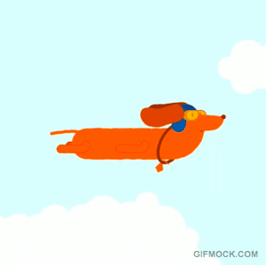

10 razones por las que Aerolab
es la empresa de mis sueños
¡Hola! Mi nombre es Vanina y si estas acá es que tal vez te gustó mi CV, o te llamo la atencion el link ;) ¡Que bueno!.
Desde que la conocí quise trabajar en Aerolab… o Aero para los amigos (aun no nos conocemos tanto asi que pienso que es muy pronto para tanta confianza ¿no?)
Cuando empecé en el mundo del diseño de interfaces y devoraba todo lo que encontraba sobre usabilidad, modelos mentales y demás una amiga me dijo : "¿Conoces Aerolab? Ellos sí que la tienen clara" ¡Y que razón tenía!
Desde entonces los stalkeo en redes sociales, y me maravillo con las cosas hermosas que hacen, con los casos de estudio animados, con los wireframes coloridos…
Si me preguntaran por qué quiero trabajar con ustedes simplemente diría:

¿Y qué más? Bueno, puedo pensar en 10 razones:
- Su nombre es sinónimo de palabras mayores en la industria del diseño y de UX.
- Todo lo que hacen es increiblemente bello...
- ¡Son muy abiertos!… so open(source)
- Super activos en la comunidad UX: charlas, eventos e incluso co-creando la carrera de UX/UI en Acamica… de la cual egresé.
- So many dogos!!! 
- Cumplo 6/6 de las cosas de esta lista. ¡Y que buena lista :D
- Hacen las mejores fiestas :)
- Sus case study son un ejemplo: claros, hermosos, atrapantes.
- Intuyo que son fans de Medium como yo.
- Es una de las empresas donde pienso que más podria aprender.

Un poco sobre mí...
Si aun estan aquí me gustaría contarles un poco más sobre mí.
Tengo 36 años, vivo en Avellaneda. Vivi 7 años en Francia, donde estudié una licenciatura en Marketing y después una maestría en Comercio Internacional.
Volví a Argentina en el 2006, y empezé a trabajar en Marketing, primero como Analista y despues como Encargada de Producto, en distintas empresas de tecnología.
Mientras tanto en mi tiempo libre diseñaba invitaciones en Photoshop y aprendía a codear sitios web en HTML y CSS… hasta que me di cuenta que el diseño Web me gustaba cada vez más y me animé a dar el salto.
Asi fué como hace 2 años empecé mi nueva carrera como Front End Designer … ¡y me encanta!
Todo esto para decirles que ansío una entrevista donde puedas contarles mas y conocerlos. ¡Y tal vez contarles porque siento que sería perfecta para Aerolab!
¡Hasta pronto y gracias por leer!